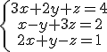

2. Sistemas de tres ecuaciones con tres incógnitas
Hay multitud de situaciones y problemas cuya solución se obtiene resolviendo sistemas con muchas ecuaciones e incógnitas. Si ya tiene mérito resolver problemas usando dos ecuaciones, imagínate con tres, cuatro,... resulta casi un ejercicio de "malabarismo". Gauss dio una respuesta a este problema resolviendo sistemas con el mismo número de ecuaciones que incógnitas.
Imagen de ihor_konst en Pixabay. Licencia Pixabay
El método de resolución de Gauss lleva su nombre debido a que él lo describió en un artículo en el que detallaba todos los cálculos que hizo para determinar la órbita del asteroide Pallas. Los parámetros de la órbita tenían que determinarse mediante observaciones del asteroide durante seis años (1803-1809), lo que dio lugar a un sistema de seis ecuaciones con seis incógnitas.
Gauss demostró cómo resolver estas ecuaciones reemplazándolas sistemáticamente por un nuevo sistema en el que sólo la primera ecuación tenía seis incógnitas, la segunda tenía cinco, la tercera tenía sólo cuatro, y así sucesivamente, hasta que la última ecuación tenía una sola incógnita. Este método también se denomina método de reducción en cascada o de triangulación.
Importante
El método de Gauss consiste en obtener sistemas equivalentes al que queremos resolver, cada vez más sencillos, hasta obtener uno muy simple con forma triangular. El sistema que buscamos debe tener una única incógnita en su última ecuación, dos en la penúltima,..., y todas las incógnitas en la primera ecuación.
Las soluciones se obtienen desde la última ecuación a la primera, es decir, resolviendo, en primer lugar, la última, sustituyendo el valor obtenido en la penúltima y resolviendo la ecuación resultante, y así sucesivamente.
En el siguiente vídeo se explica de manera sencilla, clara, y mediante un ejemplo, el método de Gauss. En este caso, se va a resolver un sistema de tres ecuaciones con tres incógnitas.
Vídeo de lasmatematicas.es alojado en Youtube
Comprueba lo aprendido
Ejercicio Resuelto
Resolver el siguiente sistema por el método de Gauss:
 |
Actividad
Rellena los huecos, para completar la resolución mediante el método de Gauss del siguiente sistema: